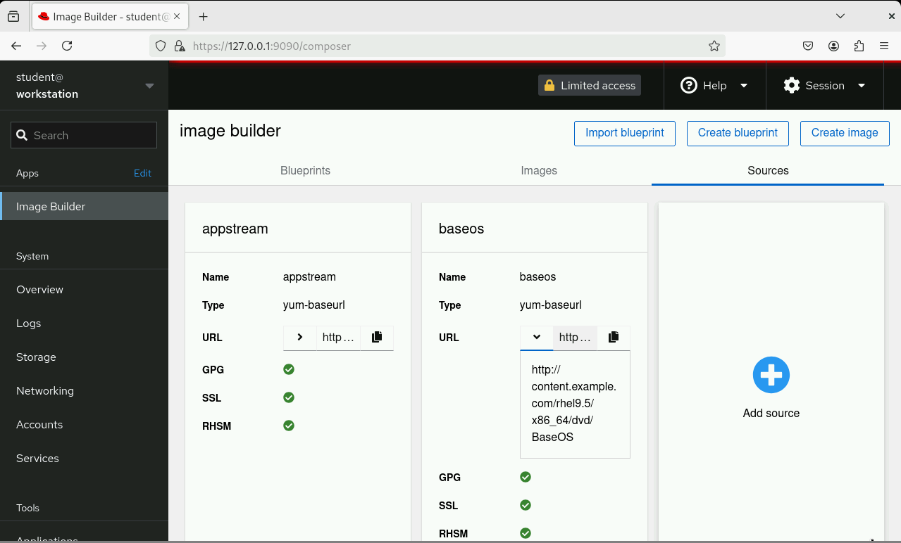

Lab: Install Image Builder on a Development VM
Estimated reading time: 5 minutes.
- Objective
-
Install and configure Image Builder in a RHEL machine for creating edge images.
| Work In Progress |
Before you Begin
You need a RHEL machine with either the root password or unrestricted sudo, and also access to Red Hat Enterprise Linux package repositories, to install any missing packages. That machine must have plenty of disk space to store multiple OSTree commits and also to use as scratch space for downloading RPM packages and bootable device images.
These instructions were tested on RHEL 9.4 [tentative!] but should work with minimal or no change on and newer and older RHEL 9.x releases.
If you are using the course classroom, you will log in on the workstation VM as the user student with password student and grant that same user access to the Image Builder service. If not, please adapt the instructions to your test environment.
Instructions
-
Install the packages for the Image Buider service and its clients.
-
Install the RPM packages for the ImageBuilder service and its CLI.
$ sudo dnf install osbuild-composer composer-cli cockpit-composer ... Complete! -
Install the RPM packages for the Cockpit service and its Composer modue.
$ sudo dnf install cockpit-composer ... Complete!
-
-
Enable the Image Builder and Cockpit services.
-
Enable and activiate the Image Builder service.
$ sudo systemctl enable osbuild-composer Created symlink /etc/systemd/system/multi-user.target.wants/osbuild-composer.service → /usr/lib/systemd/system/osbuild-composer.service. $ sudo systemctl start osbuild-composer -
Enable and activiate the Cockpit service, if not already enabled on your test machine.
$ sudo systemctl enable cockpit Created symlink /etc/systemd/system/multi-user.target.wants/cockpit.service → /usr/lib/systemd/system/cockpit.service. $ sudo systemctl start cockpit -
Enable remote access to the Cockpit service, if not already enabled on your test machine.
$ sudo firewall-cmd --add-service=cockpit --permanent success $ sudo firewall-cmd --reload success
-
-
Grant an unprivilaged user access to Image Builder.
-
Add the
studentuser to theweldrgroup so it can submit requests to the Image Builder service.$ sudo usermod -a -G weldr student -
Configure the user with bash command autocompletion for the Image Builder CLI.
$ echo 'source /etc/bash_completion.d/composer-cli' >> $HOME/.bashrc
-
-
Verify that an unprivileged user can access Image Builder using its CLI.
-
Log out and login again, then verify that the
studentbelongs to theweldrgroup.$ id uid=1000(student) gid=1000(student) groups=1000(student),10(wheel),972(weldr) context=unconfined_u:unconfined_r:unconfined_t:s0-s0:c0.c1023 -
Verify that autocompletion works for the Image Builder CLI:
$ composer-cli [TAB][TAB] blueprints compose distros help modules projects sources upload -
List compose types known to the Image Builder service. The list varies depending on the RHEL release.
$ composer-cli compose types ami edge-commit edge-container edge-installer edge-raw-image edge-simplified-installer gce ... -
If your user is not a member of the
weldrgroup, or you forgot to log off and log in again, you will see a permission error message:$ composer-cli compose types ERROR: Types Error: you do not have permission to access /run/weldr/api.socket. Check to make sure that you are a member of the weldr group
-
-
Verify that an unprivileged user can access the Image Builder service from Cockpit.
-
Open a web browser and go to https://127.0.0.1:9090. Accept the insecure TLS certificate from Cockpit, if you need, and log in as the same unprivigeded user that you configured in previous steps.
-
After you log in, click Image Builder to the left to enter the Image Builder web UI.
-
If your user is not a member of the
weldrgroup, you will see a misleading error message stating that the Image Builder service was not started.
-
-
Configure Image Builder to access package repositories from the local network.
This step is not always required, because Image Builder will download RPM packages from the Red Hat Customer Portal, but may be necessary depending on your organization’s policies. If you have local mirrors of RHEL package repositories, it is best to use then for better performance and to conserve internet bandwidth.
[ Needs updates for the RHEL 9.4 classroom! ]
-
Create a directory to store your repository overrides.
$ sudo mkdir -p /etc/osbuild-composer/repositories -
Copy the example configuration file for your distribution from the
/usr/share/osbuild-composer/directory.$ sudo cp /usr/share/osbuild-composer/repositories/rhel-92.json /etc/osbuild-composer/repositories/ -
Modify the configuration file to match your local DNF repository. Pay attention to attributes such as
baseurl,rhsmandcheck_gpg.In the classroom environment, you should make the following edits:
... "x86_64": [ { "name": "baseos", "baseurl": "http://content.example.com/rhel9.2/x86_64/dvd/BaseOS", ... "rhsm": false, "check_gpg": false }, { "name": "appstream", "baseurl": "http://content.example.com/rhel9.2/x86_64/dvd/AppStream", ... "rhsm": false, "check_gpg": false }, ...You can download a configuration file with all changes done from the sample applications repository in GitHub.
-
Restart the Image Builder service.
$ sudo systemctl restart osbuild-composer
-
-
Check that the Image Builder service is using your RHEL repository overides.
-
Verify that the repository overides are in effect, using the Image Builder CLI.
$ composer-cli sources list appstream baseos $ composer-cli sources info baseos check_gpg = false check_repogpg = false ... rhsm = false system = true type = "yum-baseurl" url = "http://content.example.com/rhel9.2/x86_64/dvd/BaseOS" $ composer-cli sources info appstream check_gpg = false check_repogpg = false ... rhsm = false system = true type = "yum-baseurl" url = "http://content.example.com/rhel9.2/x86_64/dvd/ApStream" -
You cannot configure repositoy overides for RHEL packages using the Image Builder web UI but you can verify that the changes are in effect.
Enter the Image Builder item in Cockpit and click Sources. Then, for both the BaseOS and the AppStreams channels, click the arrow (>) to expand the URL and verify it matches your configuration overide.
If you have Cockpit open in your web browser, you must reload the web page to see the changes.
-
-
Add the JQ command-line JSON processor, because it’s useful for scripting Image Builder tasks.
$ sudo dnf install -y jq ... Complete! -
Verify that you have the RPM-OStree and OSTree tools, which were installed as dependencies from image Builder. You may see different versions than the following output, depending on your RHEL release and package updates.
$ rpm-ostree --version rpm-ostree: Version: '2022.19' ... $ ostree --version libostree: Version: '2023.1' ...
Now your test system should be fully configured to build edge image using the Image Builder service.